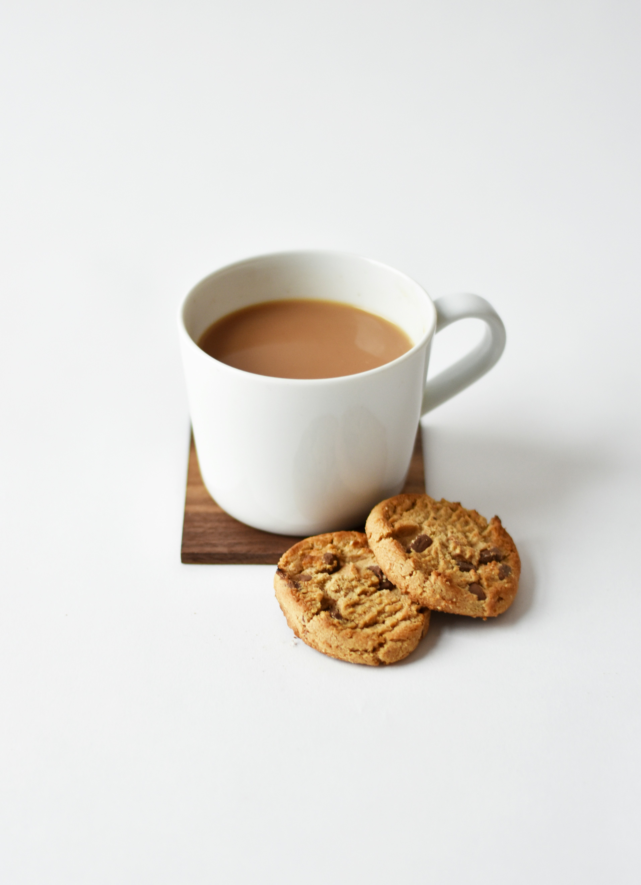

Home
Chai

This recipe shows you how to prepare a simple cup of tea
All you need are 5 simple ingredients.
Let's begin.
Ingredients:
- Water
- Milk
- Tea
- Sugar
- Cardamom (Optional)
Steps:
- Take a small pot, and add 1/2 cup water, and 1/2 cup milk (along with an open pod of cardamom).
- Heat pot until the liquid is hot, but not boiling.
- Add a spoonful of tea, and a spoonful of sugar.
- Let it come to a boil on medium heat.
- Once boiled, cook for 5 more mins.
- Serve in a cup of tea using a strainer